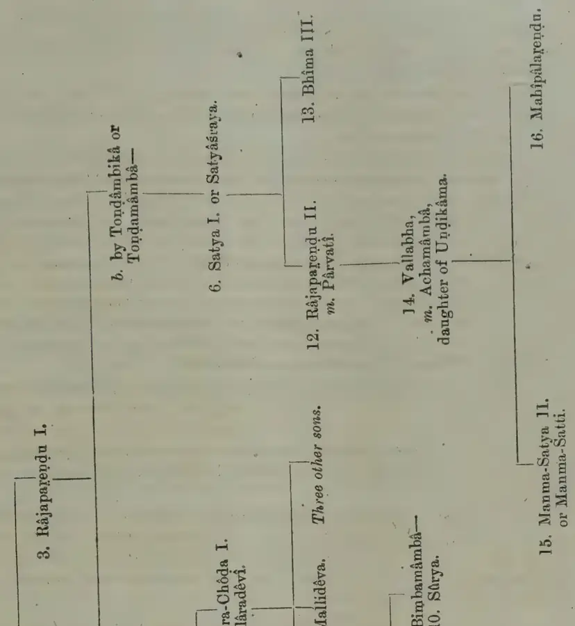

Piṭhāpuram pillar inscription of Mallidēva and Mamma-Satya II. ; Śaka-Saṅvat 1117
PITHAPURAM PILLAR INSCRIPTION OF MALLIDEVA AND
MANMA-SATYA II.; SAKA-SAMVAT 1117.
This is the second of the four inscriptions which are engraved on the pillar at the entrance of the Kunti-Mādhava temple at Pithāpuram in the Gōdāvarī district. It begins on the south face below the end of the first inscription (No. 4 above), and ends on the upper portion of the east face of the pillar. Like the first inscription, it is in a state of fair preservation almost throughout, and is written in the Telugu alphabet. Among graphical peculiarities, I would mention that is very often confounded with and . The proper order of two consonants of a group is reversed in kujba for kubja (l. 32), ajba for abja (l. 86), and yad-bāhur=bhbógīndra-litaḥ for yad-bāhur=bhbógīndra-lilaḥ (l. 105). The languages of the inscription are Sanskrit (verse and prose) and Telugu (ll. 109—116 and 127—129). Portions of it are in a mixture of Telugu and Sanskrit prose (ll. 116—127 and l. 135).
The inscription records that, at the yernal equinox (Mēsha-saṅkrānti) of Śaka-Samvat 1117 (in figures, l. 110), the village of Ôdiyūru in the district (vishaya) of Guddavādi (ll. 98, 100 and 111) was granted to the temple which contains the inscription, by the two joint rulers Mallidėva and Manma-Satya II.
The date of the inscription does not admit of verification. The current Śaka year 1117 corresponds to A.D. 1194-95, and the expired year 1117 to A.D. 1195-96.
The village of Ôdiyūru has to be looked for in the neighbourhood of Drākshārāma (in the Rāmachandrapuram tālukâ of the Gōdāvarī district), which, like Ôdiyūru, belonged to the district of Guddavādi.5 The boundaries of Ôdiyūru are described in a Sanskrit and Telugu passage (ll. 116—127). In the north-east, east and south-east, Ôdiyūru was bounded by portions of the village of Vēleṅgu, and in the south by the village of Siripuram. These two villages are identical with Vēlaṅgi and Siripuram in the Rāmachandrapuram tālukâ of the Gōdāvarī district,6 and the village granted, Ôdiyūru, is identical with the modern village of Ôdūru,7
1 Literally, ‘(which is) a portion.’
2 Literally, ‘having caused a stream (of water) to be poured (in his hand).’
3 See above, Vol. III. p. 280, note 1.
4 See ibid. p. 284, note 6.
5 See above, p. 37, note 3. The district of Guddavādi is distinct from the district of Gudravāra or Gudrāra, the name of which is probably connected with Guđivāđa in the Kistna district; see p. 34 above.
6 Nos. 77 and 78 on the Madras Survey Map of the Rāmachandrapuram tālukâ.
7 No. 45 on the same map.
which, as required by the description, has Vêlangi for its eastern, and Śiripuram for its southern boundary. Two other villages in the Guddavâdi district are Korumelli1—the modern Korumilli,2 and Kâlêru3—the modern Kâlêru.4
The inscription ends with the usual imprecations (l. 127 ff.) and the statement that it was written by Kaṇṭachârya of Śripiṭhâpuram (l. 135), who must be identical with Kaṇṭachâri, the writer of the first inscription.
The grant proper is preceded by a long Sanskrit passage which contains genealogies (1) of the Eastern Châlukya dynasty and (2) of the chiefs of Kônamaṇdala. The account of the Eastern Châlukyas agrees on the whole with the one given in the Korumelli plates of Râjarâja I.5 and in the Chellûr plates of Vîra-Chôda.6 An important statement which is missing in the two other inscriptions, occurs in line 25 f. where we are told that, of the two sons of Kîrtivarman I., the elder, Satyâśraya (Pulikêsin II.), took possession of the kingdom of Kuntala, and the second, Kubja-Vishṇuvardhana I., of the country of Vêngî. The list of the Eastern Châlukyas is continued only as far as Mangi-Yuvarâja (l. 35), and verse 5 contains a reference to a king Râjarâja of the Châlukya family, who appears to be represented as reigning at the time of the inscription, and who is evidently identical with the Râjarâja on whom Pṛithviśvara of Velanâṇdu was dependent.7
Verses 6—32 supply a fairly long pedigree of the dynasty to which the two donors belonged. These two chiefs derive their descent from the mythical being Kârtavirya, the son of Kṛitavîrya, grandson of Haihaya, and great-grandson of Hari, a descendant of Yadu (v. 6 f.). Their names, and their relation to each other, are given in the Table on page 85. The Arabic numbers which are prefixed to their names, indicate the order in which they are mentioned in the inscription.
The 3rd chief in the list, Râjaparêṇdu I., is called the lord of the Kônamaṇdala (v. 10); and the word Kôna is prefixed to the names Râjêndra-Chôda I. (l. 61), Bhima III. (l. 68), and Mallidêva (l. 113). Hence it may be convenient to call this dynasty the chiefs of Kônamaṇdala. The country over which they ruled, is probably identical with Kônaśima, the Telugu designation of the Gôdâvari delta.8
The 5th prince, Râjêndra-Chôda I., is stated to have ruled over the country of Vêngî (l. 51), and to have assumed the insignia of sovereignty which had been conferred on his grandfather (Mummađi-Bhima I.) by the Râjâdhirâja Râjêndra-Chôda. As No. 8, Mallidêva, was ruling in Śaka-Samvat 1117, the Râjâdhirâja Râjêndra-Chôda to whom his great-grandfather (Mummađi-Bhima I.) was tributary, has to be identified with the Eastern Châlukya king Râjêndra-Chôda or Kulôttunga-Chôda I. (Śaka-Samvat 985—1034). We know that Kulôttunga-Chôda I. conferred the governorship of Vêngî, successively, on his paternal uncle, Vijayâditya ; on his two sons, Râjarâja II. and Vîra-Chôda ;9 and on Chôda of Velanâṇdu.10 It is not probable that Mummađi-Bhima I. was another of the successive governors of Vêngî ; and the statement of the inscription that his grandson, Râjêndra-Chôda I., ruled over Vêngî, appears to imply nothing more than that the Kônamaṇdala was a dependency of the Vêngî country.
1 Ind. Ant. Vol. XX. p. 275.
2 No. 120 on the Madras Survey Map of the Râmachandrapuram tâlukâ. The north-western and northern boundary of Korumelli,—Mâsara (Ind. Ant. Vol. XIV. p. 55, text line 107 f.), is identical with the modern Mâtsara (No. 121 on the same map), and the southern boundary,—Vânapalli, with the modern village of the same name (No. 44 on the map of the Amalâpuram tâlukâ).
3 Ind. Ant. Vol. XX. p. 284 f. I now adopt the reading Kâlêru instead of Kôlâru (South-Ind. Inscr. Vol. I. p. 52), on the strength of Dr. Fleet's remarks (Ind. Ant. Vol. XIX. p. 433, note 77).
4 No. 140 on the map of the Râmachandrapuram tâlukâ. 5 Ind. Ant. Vol. XIV. p. 48 ff.
6 South-Indian Inscriptions, Vol. I. p. 49 ff.; and Ind. Ant. Vol. XIX. p. 423 ff.
7 See above, p. 38 f.
8 See above, Vol. III. p. 287, note 3.
9 South-Indian Inscriptions, Vol. I. p. 51.
10 See p. 36 above.
EFS OF KONAMANDALA.
I.?).

THE CHIEF
1. Mumađi-Bîma
m. Chhadvidêvî (
2. Venna.
a. by Lakshmî—
đi-Bùma II.
5. Râjèndr
m. Maile
hùpálaka or
nahípâla.
7. Bêta.
8. M
a. by Gaigâ—
Manna-Chòda II.
b. by B
10
4. Mumma
11. Iåkeb
Lókan
Lókan
9.
The Kôna chief Râjèndra-Chôda I. was evidently named after the patron of his grandfather. He bore the surnames Vikrama-Rudra, Haihayâditya, and Gandavêndaduva (v. 12), and built a mandapa which he called, after his surname, Gandavêndaduva (v. 17), in the temple of Bhimanâtha (at Drakshârâma).1 After his death, his two brothers, Mummađi-Bhima II. and Satya I. or Satyâśraya, ruled conjointly (v. 18 f.). They were succeeded by their sons, No. 11, Lôkamahipâla, and No. 13, Bhima III. (v. 23 f.); and these two again by No. 8, Mallidêva, and No. 14, Vallabha (v. 26). When Vallabha died after a reign of fourteen years, his son, Manma-Satya II., took his place (v. 31 f.)
Between the Sanskrit and the Telugu version of the grant of the village of Ôdiyûru are inserted two Sanskrit verses (36 f.) in praise of Jáyamâmbâ, the queen of Manma-Goñka and mother of Kulôttunga-Prithviśvara. This queen is already known to us from the first Pithâpuram inscription (No. 4 abpve). The insertion of a passage in her praise in the subjoined inscription suggests that the chiefs of Kônamandala were dependent on the chiefs of Velanându, and that Prithviśvara of Velanându, whose Pithâpuram inscription is dated in Śaka-Samvat 1108, was still alive in Śaka-Samvat 1117. The attribute Kulôttunga, which he receives in verse 36 of the subjoined inscription, proves that I was correct in identifying the Prithviśvara of the first Pithâpuram inscription with the Kulôttunga-Râjèndra-Chôdarâja of certain other records.2 To recapitulate, I believe that, in Śaka-Samvat 1117, the two Kôna chiefs Mallidêva and Manma-Satya II. were dependent on Kulôttunga-Prithviśvara of Velanându, who was again a vassal of Râjarâja, a descendant of the Eastern Châlukya dynasty (see page 84 above).
A number of stone inscriptions at Drâkshârâma and Pâlakôl in the Gôdâvarî district confirm and supplement the historical information on the Kôna chiefs, which the Pithâpuram pillar supplies. The earliest of these inscriptions3 records a grant, in Śaka-Samvat 1050, by Chôda, surnamed Vikrama-Rudra, the son of Râjaparêndu of the Haihaya-vamśa, the lord of the Kôna4 country (avanî), and 'the ornament (of the city) of Mâhishmati.'5 This chief is the same as No. 5, Râjèndra-Chôda I., surnamed Vikrama-Rudra,6 the son of Râjaparêndu I.
Another inscription (No. 289 of 1893) records the gift of a lamp by [Râ]jâdêvi, the queen of Kôna-Mummađirâja, and is dated in Śaka-Samvat 1057 and Châlukya-Vikrama-Samvat [6]0. This inscription must be assigned to the successor of Râjèndra-Chôda I., his elder brother Mummađi-Bhima II.
His co-regent, No. 6, Satya I., is represented by another inscription (No. 234 of 1893) of Śaka-Samvat 1057 and Châlukya-Vikrama-Samvat [60], which records the gift of a lamp by Satya or Sattirâja, the son of Kôna-Râjaparê[ndu] by Tonđidêvi, younger brother of Râjèndra-Chôda, and lord of the Kôna country (dêša).
The son and successor of Satya I., Bhima III., was a vassal of the same king Râjarâja to whose time the two first Pithâpuram inscriptions belong. This appears from an inscription (No. 246 of 1893) of the Mahâmandalêsvara Bhimarâja, the son of Kôna-Satyarâja, which is dated in Śaka-Samvat 1075 and in the 9th year of the reign of Râjarâjadêva.
Another inscription (No. 235 of 1893) is dated in Śaka-Samvat 1077 and Châlukya-Vikrama-Samvat ??, and records the gift of a lamp by [Ga]ngâdêvi, the queen of Kôna-Mall[i]râja, i.e. probably of No. 8, Mallidêva.
To his co-regent, Manma-Satya II., may be assigned an inscription (No. 517 of 1893) of Śaka-Samvat 1129, which records the gift of a lamp by a minister of Kôna-Satyarâja.
1 See above, p. 37, note 3.
2 See above, p. 38 f.
3 No. 283 of 1893 in my Annual Report for 1893-94.
4 Kôna instead of Kôna occurs also in the Nađupûru grant, above, Vol. III. p. 287.
5 The Raghuvamśa (vi. 43) mentions Mâhishmati on the Rêvâ as the capital of Pratîpa, a descendant of Kârtavîrya. General Sir A. Cunningham (Ancient Geography, p. 488) identifies it with Mandla on the Narmadâ.
6 See below, p. 95, verse 12.
Some later inscriptions in the Kshīrārâmêsvara temple at Pâlakôl mention two kings, Gaṇapatidêvamahârâja or Gaṇapadêvarâja (Nos. 520, 523, 511 and 512 of 1893) and Bhîma-Vallabharâja (Nos. 513 and 522 of 1893), to whose names the word Kôna is prefixed, and who therefore appear to have been successors of the previously mentioned chiefs. The queen of the Mahâmandalêsvara Kôna-Gaṇapadêvarâja was Odayamahâdêvî, the daughter of Mahâdêvachakravartin of Niḍudaprôlu,1 who bore the traditional surname Vishnuvardhanamahârâja (Nos. 510, 511 and 512 of 1893) and may have been a descendant of the Eastern Châlukyas. The dates of Mahâdêva range from Śaka-Saṅvat 1218 [expired], the Durmukhi saṅvatsara, to Śaka-Saṅvat 1222 [expired], the Śârvari saṅvatsara; those of his son-in-law, Gaṇapati, from Śaka-Saṅvat 118[4] to 1222; and one of the two inscriptions of Bhîma-Vallabha is dated in Śaka-Saṅvat 1240.
TEXT.2
A.—South Face.
- 1 श्रीभर्तुर्नाभिगंभोरसरसरसिजादभूत् । पद्मभूर्भूतलोकानां-3
- 2 मेकस्मादुद्भवो यतः । [१*] मानसस्तस्य पुत्रोत्त्रिरत्रेरमृतदीधितिः ।[*] सोम-
- 3 4श्रूडामणिस्सोमवंशकर्ता ततो बुधः । [२*] ततः पुरुरवा नाम चक्रवर्त्ती सुवि-
- 4 क्रमः । तस्मादायुरभूस्तस्मान्नहुषोध५ पुरुस्ततः । [३*] ततो जनमेजय-
- 5 स्ततः प्राचीशस्तस्मात्संयातिस्ततस्मार्ब्भौमस्ततो महाभौमः६ ।[*] 7इद्व[म]ने-
- 6 कनरपतिषु गतेषु पा[ण्डु]र्नाम नरपतिरुद्धचूव७ ।[*] पुत्र[ा]स्तस्य धर्म्मबो-८
- 7 मार्जननकुलसहदेवाः 10पचेंद्रियवत्पञ्च स्युर्बिषययाहिणः । त-
- 8 त्र ।[*] 11यनादाहि विजित्य काण्डवमधो12 गं[ा*]डीविना वज्रिणं (I) युध्वे13 पाशुपतास्त-
- 9 मन्धकरिपोश्चालावि14 दैत्यान्बह्लन् ।[*] इंद्रार्जसनमध्यशायि जैना15 यत्कालके-
- 10 यादिकान्जित्वा16 स्वैरमकारि वंशविपिनच्छेदः कुर्हाणाः17 विबोः । [8*] ततोर्जनाद-18
- 11 बिमन्युस्ततः परिक्षिततो जनमेजयस्ततः 19क्षेमकस्ततो नरवाहनस्ततश्शतानी-
1 This is probably Nidadavâlu, nine miles south-west of Râjamahêndri; see Mr. Sewell's Lists of Antiquities, Vol. I. p. 37.
2 From inked stampages, prepared by Mr. H. Krishna Sastri.
3 Read °भूर्भूत° and cancel the anusvâra of लीकानां.
4 Read सीमचूडा°.
5 Read °भूतस्मान्नहुषीय.
6 भौमः looks almost like जौसुः.
7 Read इत्य°.
8 Read °इभूव.
9 Read °भौमार्जुन°.
10 Read पचेन्द्रिय.
11 Read येना°.
12 Read खाण्डवमधी (i.e. Khândavam=athô); this reading is preferable to खाण्डवमठी (South-Ind. Inscr. Vol. I. p. 53).
13 Read युद्धे.
14 Read °लाभि.
15 Read जयिना.
16 Read °काञ्चित्वा; the form कालकेय is more correct than कालिकेय in South-Ind. Inscr. Vol. I. p. 53.
17 Read कुरुणां विभीः.
18 Read ततोर्जुनादभिमन्यु°.
19 This form of the name is more correct than क्षेमक in South-Ind. Inscr. Vol. I. p. 53.
12 1कस्तस्मादुदयनस्तत्प्रव्रितिष्वविच्छिन्नसंतानेष्वयोध्यासिंहासनासीनेष्वेकोन[प]ष्टिच-2
13 क्र[व]र्तिषु गतेषु तदंशो3 विजयादित्यो नाम राजा विजिगीषया दक्षि-
ण[त]पधं4 ग[त्व]ा
14 त्रिलोचनपल्लव[म]धिक्षिप्य 5देवदुरीहया लोकांतरमगमत्तस्मिन्काले तस्य महा-
15 देव्यंतर्ब्रत्तौ6 पुरोहितेन सार्द्धं 7मुडि[व]मुनामाग्रहारमुपगम्य तद्दास्तव्येन वि-
ष्णुभट्टसोमयाजिना दुहितृनिर्विशेषमभिरक्षिता सती नंदनं विष्णुवर्द्धनम-
सूत [*] तस्य कुमारस्य मानव्यसगोत्रहारितीपुत्रद्विपक्षक्रमाचितानि8 कर्मा-
णि का-
18 9रद्वत्वात्तमवर्द्धयत् । स च मात्रा विदितव्रित्तांतस्सन्निगर्गत्य10 चालुक्यगि-
री नंदां भ-
19 गवतीं गौरीमाराध्य कुमारनारायणमातृगर्णश्च11 संत्तर्प्य श्वेतातपत्रैकशंखपं-12
13 चमहाशब्दपालिकेतनप्रतिडक्कवराह(त)लांच्छनपिंच्छ्यकुंतसिहासनमकरतो-13
24 रणकनकदंडगंगायमुनादीनि स्वकुलक्रमागतानि निक्षिमानीव 14सांब्राज्यचि-
क्कानि समादाय कडंबगंगादिभूमि[पा*]न्निर्जित्य सेतुनर्मदामध्यं सार्द्धसम-
लक्षं दक्षिणापधं15 पालयामास [*] तस्य 16पल्लवान्वयज[त*]तमहादेव्यां
वि[ज]-
24 यादित्यस्मुतो भूतो17 [*] ततः पुलकेशी ततः कीर्त्तिवर्म्मा ततः[*] स-
त्याश्च[य*]-
25 विष्णुवर्द्धन18 [*] तयोर्ज्येष्ठः कुन्तलराजलक्ष्मीमग्रहीत् [*] इतरो [वेंगी*]-
26 चुवं19 [*] सोयं स्वस्ति श्रीमतां सकलभुवनसंस्तूयम[त][नमा*]-
27 नव्यसगोत्राणां हारितीपुत्राणां 20कौशिकवरप्रसादल[ब्ध][राज्या*]-
28 नां मातृगणपरिपालितानां (i) स्वामिमहासेनपादानुध्य[ाता]-
29 नां भगवन्नारायणप्रसादासादितवरवराहलांच्छन[क्ष][ण*]-
30 वशीकृतारातिमण्डलानामश्वमेधावचृधस्नानपवित्री[क्ष][त*]-21
31 वपुषां चालुक्यानां कुलमलंकरिष्णुस्सत्याश्रयव[ल्ल]-
32 भेद्रस्य(त) भ्राता 22कुञ्चविष्णुवर्द्धनोष्टादश वर्षाणि वेंगी[दे*]-
| 1 Read °त्पृति°. | 2 Read °षष्टि. | 3 Read तदंश्यो. |
| 4 Read °पथं. | 5 Read देव. | 6 Read °वंत्री. |
| 7 Read मुडिवेमु. | 8 Read °क्रमोचितानि कर्माणि. | 9 Read °रयित्वा तम°. |
| 10 Read वृत्तान्. | 11 Read °गणांश. | |
| 12 The anusvāra stands at the beginning of the next line. | 13 Read प्रतिदृक्का, पिन्छ and सिंहासन. | |
| 14 Read साम्राज्य. | 15 Read °पथं. | |
| 16 The प of पल्लव had been originally omitted by the engraver and was subsequently inserted between स्य and ल्ल. | ||
| 17 Read सुतीभूत. | 18 Read °वर्धनौ. | 19 Read भुवम्. |
| 20 Read कौशिकौ. | 21 Read °वश्य. | 22 Read कुञ्ज. |
33 शमपालयेत्1 [*] तत्पतो जयसिंहवल्लभस्त्रयचिंशतं2 [*] त[द]-
34 नुज 3इंदराजस्मम दिनानि [*] तत्पतो विष्णुवर्द्धनो नव व[र्षा]-
35 णि [*] तत्पूनमग्नियुवराजः4 पंचविंशतिं [*] एवमविच्छि[न्न]-5
36 चालुक्यकुलक्षितिपालपरंपरया [*] बभूव श्रीनिदो6 राज[ा] [रा*]-
37 जराजमहोपतिः [*] स्वनोत्या पालयत्युर्व्वीं स रत्नाकरमेख-
38 लां । [५*] अपि च [*] कुले येदूनांमजनिष्टि7 राज[ा*] हरिप्रवो-8
हैंह-
39 यनामधेयः [*] ततः 9कृतार्त्तीकृतबभुलोकः (i) कृती कृतज्ञः
40 कृतवीर्थं आसीत् [॥ ६*] रोचिष्णराधचक्षेण10 क्रान्तविश्वो यधा11
41 रविः [*] 12स्फुरत्करसहस्रेण 13कार्त्यवीर्थस्ततोजनि [॥ ७*] जी-
42 वत्युदार14 आसीत् कीर्त्तिमांत्रकलेवरे15 भूयसि भूप-
43 वर्गे [*] ततस्ततोत्तुंगजगद्दिभूतिरभोरभूम्मुम्मडिभी[म]-
44 भूपः । [८*] वल्लीव तन्वो तस्यासीच्छद्दिदेवो वरांगंना16 । तयोर-
45 यसुतो वेन्नभूपालोस्यामजस्सुखो17 [॥ ९*] श्रीमान् राजपछी[डु]-
46 [क्ष्मा]नाधः18 (i) कोनमण्डलादीशः19 [*] उपयेमे यः कुलजे लक्ष्मो-
तोंडांभि-20
47 [के] देव्ये21 । [१०*] 22लक्ष्मीमुम्मडिभीमेशं राजेंद्रचोडभूमुजं [*] असू-
48 त तोंडमांबा [च] सुतं सत्यमहोपतिं [॥ ११*] सोयं राजेंद्र[चो]-
49 डभूपति[*] स्वपितामहेन श्रीमद्राजाधिराजराजेंद्रचोड-
50 प्रसादाल्लब्धानि सिंहासनप्रतिडक्कपिंच्छकुंतैकयंखाद्यखि-23
51 लसांमाज्यचिह्नानि24 समादाय वेंगीभुवो भर्त्ताभवत् । दग्धू[ा]
52 यः प्रबलं25 प्रतापबडबासम[*]च्चिंषा26 विद्विषः27 प्राप्तो विक्रम-
53 रुद्रतां निजकरस्पष्टोकृताशेषभू- [*] लोकस्वसमस्तवृत्तिरगमद्यो
54 हैहयादित्यतां यातो [य]: खलु गंडवेंडडुवतां प्रोत्खाडि-1
55 तारिश्रिया [॥ १२*] 2तस्याचवल्कुलस्त्रीणां विष्णोर्लक्ष्मीरिव प्रिया [[*]]
मैलार[दे]-
56 वी महिषी योषिल्लोकविभूषणं । [१३*] अस्यास्तानां पञ्चानां3 ज्वलत्यं-4
57 च्छाग्नितेजसं5 [[*]] अग्रजो बेतभूपालो मल्लिदेवनृ[पो]नुज: । [१४*] बेत-
58 भूपालकाज्जातो6 गंगाश्रीबिंबमांबयो: । सितकीर्ती सू[तौ]7 मन्म[चो]-
59 [ड]सूर्येक्षितीश्वरौ । [१५*] निजकार्मुकनिर्मुक्त[ब]ाणनि[द्द]लितदि-
60 [षौ*] [।] 8सौब्रात्रभु(नि)जवीर्याभ्यांमुबौ9 राघवलक्ष्मणौ । [१६*]
नृपकुलति-
61 लको य: कोनराजेंद्रचोड: कृतसकलमुक्तत्यो [गं]ड[वे]डडुव-10
62 [ना]म्ना [[*]] 11द्विचुज[मि]ह सहप्राकारकं कारयित्वा शिवमलचत12 शै-
63 लं मंटप13 बीमनाधे । [१७*] तस्याग्रावरजन्मा[नौ] जगद्विमतविक्ष[मौ]14
[[*]] श्री-
64 मन्मुम्मडिबीमेशसत्याश्रयमहीपतो15 [॥ १८*] विचज्येमां16 [चुवं] चू-
65 य: पालयामासतुस्समं [[*]] निजप्रतापदग्धातिमंडलाधीश-17
66 मंण्डलो18 [॥ १९*] 19तयोम्मुम्मडिबीमेशाल्लोकचूपालकोजनि [[*]] लो-
67 कालोकान्तरालानि शोभयन्निज[ते]जसा [॥ २०*] सत्येशाद्वलिनो
68 जातौ बलक्षणसमौ20 नृपो21 । श्रीमद्राजपठेंडुश्रीकोनबी-22
69 मक्षितीश्वरौ [॥ २१*] जातौ23 राजपठेंडोश्च पार्वतीवल्लवाद्दुव:24 ।
70 भर्ता श्रीवल्लभाधीश: क्षाठयन्कलिकल्पं [॥ २२*] अनन्तरं
71 पितु[:*] श्रीमान्निजसिंहासनस्थित: । सोयं लोकमहीपाल:
72 पालयामास मेदिनीं । [२३*] तधा25 श्रीभीमभूपाल: (I) पितुस्सत्यम-
73 हीपते: । राज्यलक्ष्मीं चुवा26 सार्द्धं दध्रे साक्षादिवाच्युत: [॥ २४*]
74 धीर[प्रद्वे]षियोषिद्गणविरहजलापारधारास्थजन्तो27 स्वज्यो-
1 Read प्रीत्खण्डि.
2 Read तस्याभव.
3 Read पञ्चानां.
4 The anusvāra stands at the beginning of the next line.
5 Read °त्यक्षाग्नितेजसाम्.
6 Read °काज्जातौ.
7 Read सुतौ.
8 Read सौभात्र.
9 Read °भ्यामुभी.
10 The word वेंडडुव offends against the metre.
11 Read द्विमुज.
12 Read °लभत.
13 Read मण्डपं भीमनाधे.
14 Read °द्विदितविक्रमौ.
15 Read भीमेश.
16 Read विमर्ज्येमां भुवं भूय:.
17 Read दग्धारि.
18 Read मण्डलौ.
19 Read तयोर्मुम्मडिभीमेशाल्लोकभूपाल.
20 To the क of कृष्ण both ri and i are attached in the original.
21 Read दृपौ.
22 Read कीनभीम.
23 Read जातौ.
24 Read °वल्लभाद्दुव:.
25 Read तथा.
26 Read भुवा.
27 Read °स्थजन्तो (for °स्थाजयन्तो ?).
75 1तिर्जलदृग्वित्रमविहितमहामोहभग्नांस्तदीशान् [1*] आलिं-2
76 ग्यालिंग्य कठेष्वध3 तदसुसमं सर्ववित्तं हरंती बाति4 प्रो-
77 डांग्गनेव5 स्वकरदृडगृहीतार्प6 यत्खङ्गवल्ली । [२५*] तयोर[न*]न्तरं क्षो-
78 [णी]मक्षतं परिरक्षतः [1*] मल्लिदेवमहीपालवल्लवेशविशांपती7 [॥ २६*]
79 [य]: 8प्रोडक्षितिपालमौलिमकुटालंकारसिंहासन[:*] [प्रो]-
80 [द्वृ]त्तारिपुरापरत्रिपुरह[1*] भूधूर्द्वर[:*] श्रीधरः [1*] यश्चा[शे]षकलाक-
81 ला[प]विभवा9 क्षाभारतीवल्लभः (i) 10संप्पद्धोगपुरंदरः क्षितिभृतां
82 [श्री]म[ल्लिदे]वाधिपः । [२७*] श्रीवल्लभमहीपाल उंडिकामनृपात्मजां [1*]
83 पयेमेग्र[म]हिषीमचमांबेति विश्यतां11 । [२८*] तस्यामजनयत्पुत्रौ12
84 [वं]शवार्ध्वसुध[त]क(त)रौ13 [1*] मन्मसत्यमहीपालछेडुनामक्षितीश्वरौ [॥ २९*]
85 अपि च । स्वश्रीबाहुलताष्टतासिलतिकामात्रै[क]मित्रे14 हते (i) श्रीह-
86 स्तस्थितवारिराशिरशना[ली]लाज्वराज्यश्रियां15 [1*] सत्यो नित्यरता16 म[ति]-
87 प्रणिहितप्रत्ययनी[ति][:*] श्रुतिस्मृत्युत्पाधितधर्मकर्मनिरताः17
B.—East Face.
88 नुष्ठाननिष्ठापरः । [३०*] चतुर्दश समा[:*] श्रीम(त)त्युरुविक्र-
89 मचक्रिणि [1*] वल्लभक्षोणिपाले च राज्यं कृत्वा दि[वं] ग-
90 ते । [३१*] ततस्तदात्मज[:*] श्रीमान्मन्मसत्यमहीपतिः । पितुसिं-18
91 ह्यासनारु[ड]:19 (i) 20प्रोडारिभडबानलः । [३२*] अत्यिसंदोह-
92 मंदारः कामिनीमकरध्वजः [1*] प्रतिक्षत्रियनक्षत्रप्र-
93 भ[त*]विभ्रमबानुमन्21 । [३३*] अक्षीणगुणमाणिक्यधीगबो-22
94 रमहार्ववः । ब्रह्माण्डमण्डनाखण्डकीर्त्तिध[त*]मसुधाकरः [॥ ३४*]
95 समस्तभुवनाधा[र]धीरत[त*]कांक्षनाचलः । अनन्तकात्तिसं-23
96 त्तानलक्ष्मीलक्ष्मीनिकेतनः । [३५*] सोयं मल्लिदेवक्षितिपतिर्य-
97 श्वैष वल्लभेंद्रस्य तनयः24 (i) मन्मसत्येश्वर(ः) उभी25 सह
98 संचुय1 गुद्दवादिविषयराष्ट्रकूटप्रमुखान्कुटं-2
99 विनस्सर्वान्ममाह्येर्यमाज्ञापयेतः3 । विदितमस्तु वो
100 गुद्दवादिविषये4 श्रोदियूरुनामयामोस्मावि[:*]5 श्रीपिठा-
101 पुरोनिवासिने श्रीकुन्तीमाधवदेवाय सर्वकरपरिहारे-
102 ए दत्त इति । अपि च । गाडारुडो6 निरुडोव्रतिघनघनित(१)-
103 7प्रोडविध्वेषिसालस्कन्ध(१)स्कन्धान्तर[१*]णि 8स्फुरदसुलतिकाजिंद्व-9
104 या विडमृद्धं [१*] 'पायं पायं तदीयात्यलघुलसदसु-
105 स्पशन10 शोचते यद्वाहुर्भोगोद्रलीतः11 प्रदनचुवि कुलोत्तुंग-
106 12पृध्वीश्वरस्य । [३६*] माता या जायमांबा सकलकुलसतीसत्तमेत्तुं-13
107 गा(१)कीर्तिर्मूर्तीभूता 14गरुत्मध्वजप[द]जलजद्धं[ह]सद्राजहं-15
108 सी । या श्रीमन्मन्मगोंक्वचितिपवरविबोर्डम्पन्नी16 तयाच्चै[:*]17 स्वस्या-
109 18स्सद्वक्तिसाक्षोक्तविमलशिला मंदिरालंक्ताया19 । [३७*] शकवं-
110 षंबंलु20 १११७ गुनेंदि मेषसंक्रान्तिनिमित्तमुन श्रीपिठा-
111 पुरमुन श्रीकुंतीमाधवदेवरकु गुद्दवादिलोनि श्रोदियू-
112 रनियडि21 उरु यिहाक्षेत्रारामसहितमु गलानखंडमुनु
113 श्रीमन्महामण्डलेश्वरकोनमल्लिदेवराजुनु वल्लभराजु कोडकु
114 [म]न्मसत्तिराजुनु 22हविर्भल्यर्चनात्तमु23 नित्यनैमित्तिक-
115 मासोत्सवसंवत्सरोत्सवार्यमुनु गीतनृत्यवाद्यादिवि-
116 24विधबोगार्यमुंगानिच्चिरि [१*] अस्य यामस्य सीमानः । पूर्व-
117 तः वलेंगु25 एष्ठगुंदय सीमा [१*] आग्येयतः26 वेलेंगुन एनि-
118 क अलमुन भोडतातकालिय सीमा [१*] दक्षिणतः (१) श्रीपादमु-
119 लु[प]ल्लि सीरिपुरमुन मय्यनिकुट वेमुगुण्डय सीमा । कोल्लुरकु-
120 ष्ठानु नल्लंजेष्ठानु कोम्मुन गुण्डय पट्टि वच्चि नैरितितः27 (१) एनुंगुद-
1 Read संभूय.
2 The anusvāra stands at the beginning of the next line.
3 The ā of °ह्य is expressed by attaching ā to the top and u to the right of ह ; read °येत्यमाज्ञापयतः.
4 Read विषय.
5 Read °स्माभिः.
6 Read गाढारुढी निरुढी.
7 Read प्रौढविहेषि.
8 Read स्फुरदसि.
9 Read जिह्वया.
10 Read °स्पर्शनं श्रीभते.
11 Read °लीलः प्रधनभुवि.
12 Read पृथ्वी.
13 Read सत्तमोत्तुङ्ग ; the anusvāra stands at the beginning of the next line.
14 Read °त्मज्ञ.
15 The anusvāra stands at the beginning of the next line.
16 Read विभो.
17 Read तयोर्चः.
18 Read सङ्क्ति.
19 Read °क्वतेयम्.
20 Read वर्षबुलु.
21 Read °नियेडि ऋ गृह्येत्रा.
22 Read हविर्ब.
23 Read °नार्यमु.
24 Read भोगा.
25 Read वेलेंगु.
26 Read चाम्नेयतः.
27 Read नैर्ऋततः.
121 ल क्रोप्पल्लि पोलमुन मय्यनिकुट्टन पुल्लिगुंटय सोमा [1*] पच्चिम-1
122 तः (i) क्रोप्पल्लि तूर्प्पन2 कवलगुंटल सोमा । वायव्यतः चनुपक-
123 त्य व[य]लि केशवचंदुचेऽऽवु तूर्प्पन3 गटयवुऽऽ गटय सो-
124 मा । उन्नरतः संप्पर पोलमुन *बीमराजुचेऽऽवु दक्षिणमु [ग]-
125 टय सोमा । उप्पुटेऽऽनु नक्कलकालियं गलसिन मय्यनिकु-
126 दु मेरगानु वच्चि ईशान्यतः6 (i) यप्पुटेटि दक्षिणमुन गदु वटि वच्चि
वेलिंगुन
127 प्रेमुलवंक्कय सोमा । ई धम्मुवनकुनेव्वरु विलंबंमु सेसिरेनि वारु
128 पंचमहापातकमु सेसिन पा[प]मुनं भोदुरु6 । गंगकऽऽत वे[यि] क-
129 विललनु वेवुरु बाह्यणुलनु वधिंच्चिन पापमुनं भोदुरु7 [॥*] बहुभि-
130 व्वेसुधा दत्ता बहुभिश्चानुप[1*]लिता [1*] यस्य यस्य यदा भूमि-
स्तस्य
131 तस्य ताद फलं । [३८*] स्वदत्तां परदत्तां वा यो ह[रे]तु वसुंध्ररां8
[1*] षष्टिवर्ष-
132 सहस्राणि विष्ठायां ज[1]यते क्रिमिः । [३९*] इति व्यासवचनाच्चायं
धर्मः
133 परिपालनीयः । शत्रुर्णपि9 कृता धर्मः पालनीयः प्र[य]तः [1*]
शत्रु-
134 रेव हि शत्रु[:*] स्याद्धर्मः शत्रुन्नं कस्यचित् [॥ 8०*] तस्म[1*]-
दयं 10दर्मस्वर्वै[:*] परिपा-
135 लनिय्यः11 [॥*] श्रीपिठापुरमुन कंटाच[1*]र्येलिखितं [1*] श्री श्री श्री
[॥*]
ABRIDGED TRANSLATION.
(Verso 1.) “From the lotus-flower (that rose from) the navel of (Vishnu) the husband of Śrī, (which resembled) a deep tank, there was born the lotus-born (Brahmā), from whom alone the worlds, (with their) living beings, were produced.”
(V. 2.) “His (viz. Brahmā's) son, produced from the mind, (was) Atri. Atri's (son was) the Moon, the crest-jewel of Sôma (Śiva) (and) founder of the lunar race (Sôma-vamśa). From him (was born) Budha.”
(Line 3.) Budha's lineal descendants were the following:— the emperor Purūravas; Âyu; Nahusha; Puru; Janaméjaya (I.); Práchiśa; Samýati; Sârvabhauma; Mahâbhauma, and
1 Read पश्चिमतः.
2 Read तूर्पुन.
3 Read तूर्पुन.
4 Read भौम०.
5 Read ऐशानतः उप्पु०.
6 Read बीदुरु.
7 Read बीदुरु.
8 Read वसुंधराम्.
9 Read शत्रुर्णापि कृतां।.
10 Read धर्मः.
11 Read *लनीयः.
other kings; Pānđu; his five sons: Dharma, Bhīma, Arjuna, Nakula and Sahadēva; Arjuna's son, Abhimanyu; Parikshit; Janamējaya (II.); Kshēmaka; Naravāhana; Śatānīka; Udayana, and, succeeding him, fifty-nine other emperors of Ayōdhyā.
Lines 13-23 relate, in the usual manner,1 Vijayāditya's expedition to the Dekhan, his death in a battle with Trilōchana-Pallava, and the birth of his posthumous son Vishṇuvardhana at the agrahāra of Muđiv[é]mu, the dwelling-place of Vishṇubhaṭṭa-Sōmayājin.— "Having conquered the Kađamba, the Gaṅga, and other princes, this (Vishṇuvardhana) ruled over the Dekhan (Dakshināpatha), (which is situated) between (Rāma's) bridge and the Narmadā (river), (and which contains) seven and a half lakshas (of villages)."2
(L. 23.) "His (viz. Vishṇuvardhana's) son by (his) great queen, who was born from the Pallava race, was Vijayāditya."
(L. 24.) "To him (was born) Pulakēśin (I.); to him, Kirtivarman (I.); (and) to him, Satyāśraya (Pulikēśin II.) and Vishṇuvardhana (I.). The elder of these two took possession of the dignity of king of Kuntala; the other, of the country [of Vēngi]."
(L. 26.) "This Kubja-Vishṇuvardhana (I.), who was the brother of Satyāśraya-Vallabhēndra (Pulikēśin II.); (and) who adorned the race of the glorious Chālukyas, etc.,3 ruled over the country of Vēngi for eighteen years; his son, Jayasimha (I.)-Vallabha, for thirty-three (years); his younger brother, Ind[r]arāja, for seven days; his son, Vishṇuvardhana (II.), for nine years; (and) his son, Maṅgi-Yuvarāja, for twenty-five (years)."
(L. 35.) "Thus, in the unbroken lineage of the kings of the Chālukya race,—
(V. 5.) "Was born king [Rā]jarāja, the lord of the earth (and) abode of prosperity. He is ruling, by means of his statesmanship, the earth girt by the ocean."
(L. 38.) "And moreover,—
(V. 6.) "In the race of the Yadus was born, to the lord Hari, a king named Haihaya. To him was born the wise (and) virtuous Kritavirya, who fulfilled the desires of the multitude of (his) relatives."
(V. 7.) "From him was born Kārtavirya, who, like the sun, passed over the world on the wheels of (his) glittering chariot, (and was furnished) with a thousand strong arms (or rays)."
(V. 8.) "When a great number of noble kings were living (in such a way that) their body consisted only of (their) white fame,4 there was born from this (race) the fearless prince Mummađi-Bhīma (I.), whose great power spread over the world."5
(V. 9 f.) "His excellent wife was Chhadvidēvi,6 who was as slender as a creeper. The elder son of this couple (was) prince Venna. His younger brother (was) the fortunate (and) glorious prince Rājaparenđu (I.), the lord of the Kōnamanđala, who married two noble queens, Lakshmī and Tonđāmbikā."
1 A translation of this passage was given in South-Indian Inscriptions, Vol. I. p. 58.
2 Among the conquests of the two Chōla kings Rājarāja and Rājēndra-Chōla, we find the corresponding term 'the seven and a half lakshas of Iraṭṭapāđi.' Rājēndra-Chōla took Iraṭṭapāđi from the Western Chālukya king Jayasimha III. Consequently, Iraṭṭapāđi appears then to have been the designation of the Western Chālukya empire. The Khārēpāṭan plates of Ratṭṭarāja (above, Vol. III. p. 294) state that, after the downfall of the Rāshtrakūṭas, the Western Chālukyas ruled over Ratṭṭapāđi, and thus show that the original meaning of the term Iraṭṭapāđi was, as its etymology already suggests, 'the empire of the Ratṭṭas or Rāshtrakūṭas.'
3 See South-Indian Inscriptions, Vol. I. p. 58, note 5.
4 i.e. 'after many kings of Kārtavirya's race had passed away.'
5 Tat-ōttuṅga-jagad-vibhūtiḥ appears to be meant for jagat-tat-ōttuṅga-vibhūtiḥ.
6 In dśich=Chhadvidevi, the letter chha may be only due to saṅdhi, and the actual name of the queen may as well have been Sadvidēvi.
(V. 11.) “Lakshmî bore the lord Mummađi-Bhima (II.) (and) prince Râjèndra-Chôđa (I.); and Tonđamâmbâ’s son (was) prince Satya (I.).”
(L. 48.) “This prince Râjèndra-Chôđa (I.) assumed all the insignia of sovereignty, (viz.) the throne, the pratiđhakkâ (drum), the peacock’s tail, the spear, the single conch, etc., which his grandfather had received through the favour of the glorious Râjádhirája Râjèndra-Chôđa, and became the lord of the country of Vêngi.”
(V. 12.) “Verily, having burnt the enemies by the submarine fire of (his) fierce valour, he acquired the surname Vikrama-Rudra (i.e. ‘resembling Rudra in prowess’); having made manifest by his own hand (i.e. having enforced) all the rules of conduct for each of the inhabitants of the whole earth, he acquired the surname Haihayáditya (i.e. ‘the sun1 of the Haihayas’); (and) he acquired the surname Ganđavênđađuva2 by crushing the power of enemies.”
(V. 13.) “As Lakshmî (is) the wife of Vishnu, his (wife) was Mailâradêvî, the queen of noble women (and) the ornament of womankind.”
(V. 14.) “Among her five sons, who resembled the burning five (sacred) fires in splendour, the eldest (was) prince Bêta; (and his) younger brother (was) prince Mallidêva.”
(V. 15.) “To prince Bêta were born, by Gangâ and the illustrious Bimbamâmbâ (respectively), two famous sons, Manma-Chôđa (II.) and prince Sûrya.”
(V. 17.) “Having caused to be built of stone in (the temple of) Bhimanâtha a manđapa, named Ganđavênđađuva (after himself), (and furnished) with two wings (dvi-bhuja) (and) with an enclosure (prâkâra), this ornament of princes, the virtuous Kôna-Râjèndra-Chôđa (I.), obtained bliss (i.e. died).”
(V. 18 f.) “His elder and younger brothers, the glorious lord Mummađi-Bhima (II.) and prince Satyâšraya, whose prowess was famed in the world (and) who burnt by (the fire of) their valour crowds of hostile lords of provinces,—again (?) divided this earth (!) and ruled (it) conjointly.”
(V. 20.) “Of these two, to the lord Mummađi-Bhima (II.) was born Lôkabhûpâlaka, who adorned the ravines of (the mythical mountain) Lôkâlôka by his lustre.”
(V. 21.) “To the powerful lord Satya (I.) were born two princes who resembled Bala and Kṛishṇa, the glorious Râjaparenđu (II.) and the glorious prince Kôna-Bhima (III.).”
(V. 22.) “To Râjaparenđu (II.), the husband of Pârvatî, was born a ruler of the earth, the glorious lord Vallabha, who washed away the spots of the Kali (age).”
(V. 23.) “After (the death of his) father, that3 glorious Lôkamahipâla ruled the earth, seated on his throne.”
(V. 24.) “And, like Achyuta (Vishnu)4 himself, the glorious prince Bhima (III.) embraced the royal fortune of (his) father, prince Satya (I.), together with the earth.”
(V. 26.) “After these two, prince Mallidêva and the lord Vallabha ruled the earth undisturbed.”
(V. 28.) “The glorious prince Vallabha married, as chief queen, the daughter of prince Unđikâma, named Achamâmbâ.”
(V. 29.) “By her he had two sons, (who caused the rise of their) family, as the moon of the ocean,—the two princes named Manma-Satya (II.) and Mahipâlarenđu.”
1 The king’s resemblance to the sun rests on the double meaning of kara, ‘a hand’ and ‘a ray.’
2 The first member of this compound is the Telugu-Kanarese word ganda, ‘a strong man;’ the second member is perhaps connected with the Telugu vêndramu, ‘heat.’
3 This pronoun refers to Lôkabhûpâlaka in verse 20.
4 Lakshmî and the Earth are considered as Vishnu’s wives.
(V. 31 f.) “When the glorious prince Vallabha, a provincial chief (chakrin) of great valour, had gone to heaven after a reign of fourteen years, his son, the glorious prince Manma-Satya (II.), ascended the throne of (his) father.”
(L. 96.) “That prince Mallidėva and this lord Manma-Satya (II.), the son of the lord Vallabha, having both conjointly called together the Ráshtrakútas and all other ryots of the district (vishaya) of Guddavādi, issue the following command :—
(L. 99.) “‘Be it known to you that we have given, with exemption from all taxes, the village named Ödiyûru in the district of Guddavādi to the god Kuntî-Mádhavadėva who resides in Śripithāpuri.’”
(L. 102.) “And moreover,—
(V. 36 f.) “This lofty spotless stone which adorns1 the temple, was made the eye-witness of her true devotion (to Vishnu) by that Jāyamāmbā, who was the lawful wife of the glorious lord Manma-Goñka, the best of princes; who was the mother of Kulòttunga-Prithviśvara;2 who was an incarnation of the great fame of the best among all noble and virtuous women; (and) who was a noble swan at the pair of the lotus-feet of (Vishnu) whose banner (bears the bird) Garuđá.”
(L. 109.) “In the Śaka year 1117, at the time of the Mésha-sainkrānti,— the glorious Mahāmaṇdaléśvara Kôna-Mallidėvarâja, and Manma-Sattirâja, the son of Vallabharâja, gave to the god Kuntî-Mádhavadėva in Śripithāpuram the whole village called Ödiyûru in (the district of) Guddavādi, together with houses, fields and gardens, for burnt offerings, oblations and worship, for daily and periodical rites, monthly festivals and annual festivals, and for various expenses. (bhôga) on account of singing, dancing, music, etc.”
(L. 116.) “The boundaries of this village (are):— In the east, the boundary (is) the Eřra-guñta (tank) in Vêleňgu. In the south-east, the boundary (is) the Bhôđatáta-káli (channel)3 in the pasture land of Ênika in Vêleňgu. In the south, the boundary (is) the Vêmp-guñđa (tank) at the meeting-point of the boundaries4 of Śripâdamulupalli (and) Siripuram. (Thence), coming along the pond at the head of the Nallañjeřuvu (tank) in Koklurukuru,— the boundary in the south-west (is) the Pulli-guñta (tank) at the meeting-point of the boundaries of the fields of Enuňgudala (and) Kroppalli. In the west, the boundary (is) the pair of tanks to the east of Kroppalli. In the north-west, the boundary (is) the embankment (and) a (water) lever5 (near) the embankment to the east of the Kêšavachañtu-cheřuvu (tank) in the plain of Chanupakatya. In the north, the boundary (is) the southern embankment of the Bhîmarâju-cheřuvu (tank) in the fields of Sampara. (Thence), coming as far as the confluence at which the Upputêřu (river) and the Nakkala-káli (channel) unite,— the boundary in the north-east (is) the Prêmula-vañka (channel) in Vêleňgu along the embankment to the south of the Upputêřu.”6
(L. 127.) “If any cause obstruction to this charity, they shall incur the sin of those who commit the five great sins, (and) shall incur the sin of those who have killed one thousand tawny cows (and) one thousand Brâhmaṇas on the bank of the Gañgâ.”
1 Alaňkrita appears to be used in the sense of alaňkarishnu.
2 The remainder of the translation of verse 36 is omitted here.
3 Káli, which occurs again in line 125, and three times in the Korumelli plates of Râjarâja I. (Ind. Ant. Vol. XIV. p. 54 f. text lines 104, 105 and 108), is perhaps connected with the Telugu kálava, ‘a channel.’
4 The term mayyanikuñtu occurs three times in the description of the boundaries of Ödiyûru (in lines 119, 121 and 125 f.). It must be connected with muyyanikuñtu, which is found five times in the Chellûr plates of Kulòttunga II. (Ind. Ant. Vol. XIV. p. 59, text lines 71, 74, 75, 76 and 78). Both forms of the word appear to be corruptions of muyyalaguñta, which, according to Brown's Telugu Dictionary, p. 789, is derived from múđu, ‘three,’ + ella, ‘a boundary,’ + guñta, ‘a bill,’ and means ‘a place where three boundaries meet.’ In the present inscription, the word mayyanikuñtu is in each case preceded only by two proper names of boundaries; and we have evidently to supply as third boundary the village granted, viz. Ödiyûru.
5 Avuřu is probably the same as auru, on which see Brown's Telugu Dictionary, p. 154.
6 To Mr. Ramamurti I am again indebted for help in translating the Telugu description of the boundaries.
Verses 38 and 39 are two of the usual imprecatory verses.
(L. 132.) “And in accordance with this sentence of Vyāsa, this charity has to be protected.”
Verse 40 is identical with verse 69 on page 54 above.
(L. 134.) “Therefore this charity has to be protected by all.”
(L. 135.) “(This edict was) written by Kantāchārya at Śrīpiṭhāpuram. Hail! Hail! Hail!